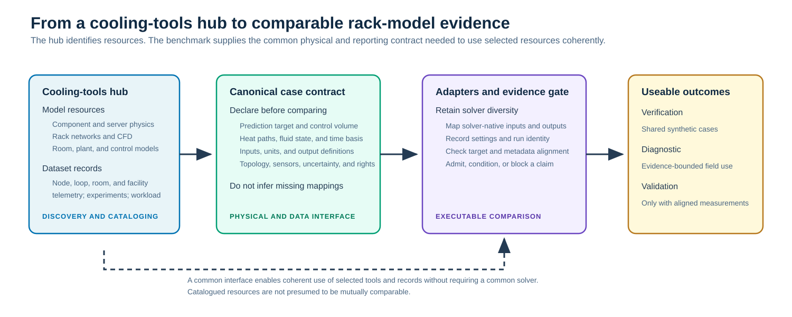
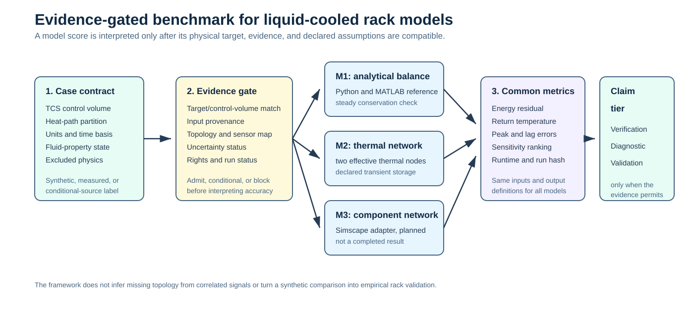

1. COMMON CONTRACT
Comparable inputs and outputs
Each model declares its control volume, input trace, initial state, units, time step, output definition, and run record.
A curated hub and benchmark framework for thermal-fluid models across servers, racks, CDUs, and facility cooling systems.
Explore the repository Run the synthetic v1.0 suite Plain-language summaryThe repository is a discovery hub for cooling tools and data across component, rack, room, and facility scales. The benchmark adds the shared physical and reporting contract that a selected model and dataset must satisfy before their results are compared. It does not present an energy-balance calculation as model validation.
Each model declares its control volume, input trace, initial state, units, time step, output definition, and run record.
The v1.1 suite compares a quasi-steady balance, a two-node thermal network, and a parallel-branch thermal-hydraulic model under declared synthetic inputs.
Verification, conditional diagnosis, and empirical validation have different prerequisites and must not be conflated.
The public v1.1 case is a synthetic rack-manifold technology-cooling-system benchmark. It compares declared model structures without presenting an assumed heat path as an empirical validation case.


A developer supplies a runnable implementation and a machine-readable run record. The framework checks the record, applies common synthetic inputs, and compares compatible outputs. Measured targets are added only when the system boundary and evidence are documented.
Researchers can compare reduced-order, network, and simulation models. Operators can see which measurements constrain a prediction. Tool users can identify where a claimed result is supported, proposed, or blocked by missing facility metadata.